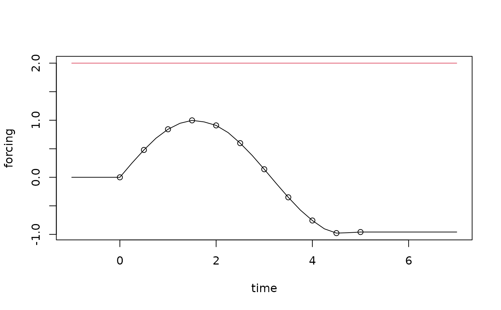

Evaluates forcings the way a model from cppODE() or cvode() sees them:
the monotone cubic Hermite interpolant (PCHIP) through the points of each forcing,
holding the value of the first and the last point outside them.
Arguments
- times
Numeric vector of times.
- forcings
Named list of forcing data, as
forcingsofsolveODE().
Examples
tF <- seq(0, 5, by = 0.5)
forcings <- list(F1 = data.frame(time = tF, value = sin(tF)),
F2 = data.frame(time = 0, value = 2))
times <- seq(-1, 7, by = 0.25)
v <- forcingValues(times, forcings)
matplot(times, v, type = "l", lty = 1, xlab = "time", ylab = "forcing")
points(tF, sin(tF))
